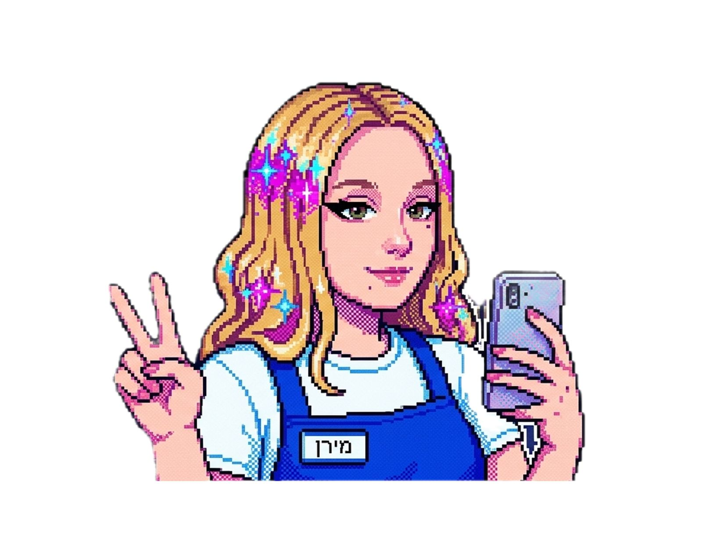
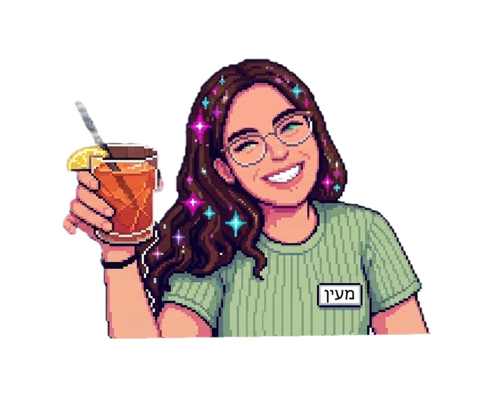
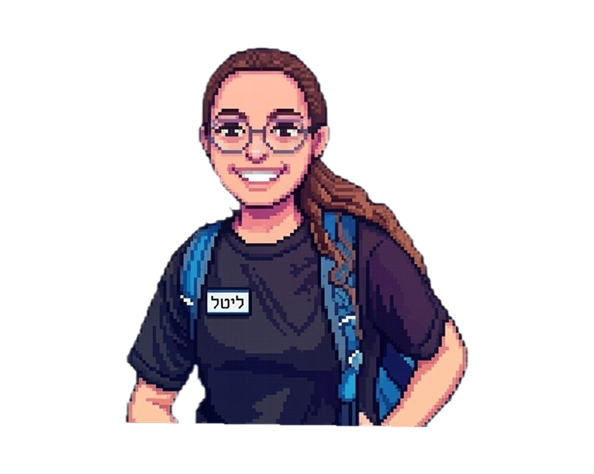

אודות
האתגרים שנתקלנו בהם בזמן בניית האתר הם:
- רספונסיביות הפרסומות הצידיות : הנדסת פריסה גמישה הממקמת את הפרסומות הצדדיות בצדדים ב-Desktop, ומקפלת אותן כבאנרים רוחביים בתחתית העמוד במובייל למניעת הפרעה לתוכן.
- שמירה על תקן נגישות מחמיר WCAG 2.1 AA: בניית כרטיסיות מתהפכות, נגנים ומשחקים דינמיים הניתנים לשליטה מלאה במקלדת, עם סימוני פוקוס מובלטים והיזון קולי לקוראי מסך.
- פיתוח משחק אפייה ומקשט עוגה (נוסטלעוגן) ב-Vanilla JS: פיתוח מלא ומתוחכם של אינטראקטיביות העלאת תמונה אישית כדף סוכר, גרירת נרות וסוכריות וכיתוב שוקולד חי ללא ספריות חיצוניות!
צוות הפיתוח

דריה וורוטילין
רני רשף
שי פישמן
בן ציון
אפיון ועיצוב הממשק
האתר אופיין ועוצב לפי עקרונות מתקדמים של "עיצוב ממשק משתמש" (UI/UX) ופותח בשפות HTML5 ו-CSS3 תקניות, תוך התחשבות מלאה וקפדנית בעקרונות "נגישות אתרי אינטרנט".ניווט מהיר במפת האתר
לעיון במפת האתר המלאה המפרטת את כל המבנה הלוגי של פרויקט הגמר: מעבר למפת האתר הרשמית🗺️פרסומת

פרסומת